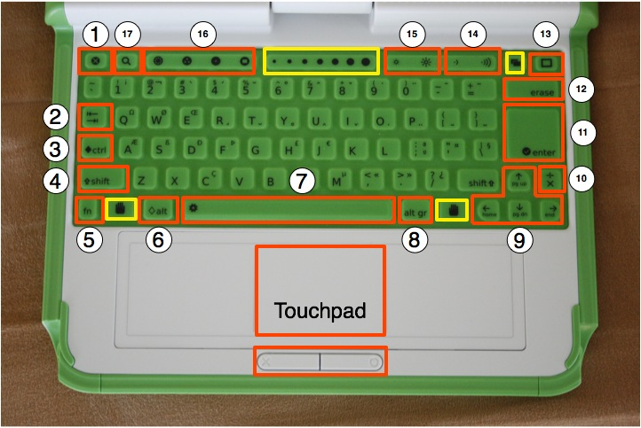

لوحة المفاتيح

تحتوي لوحة المفاتيح المقاومة للغبار والماء على أزرار خاصة للمزيد من الخيارات. كل بلد يتميز بلوحة مفاتيح للغة الأساسية المتداولة فيه، لذلك فلوحة مفاتيحك لن تكون مطابقة للصورة.الأزرار المعلمة باللون الأصفر مخصصة لإستعمالات في المستقبل.
- زر Escape
يرمز لزر Escape بعلامة × وسط دائرة سوداء.زر Escape يستعمل غالبا مع زر ctrl لمغادرة النشاط. (ctrl + esc) - زر Tab
يرمز لزر Tab بسهمين في اليمين واليسار ويستعمل لإنشاء مسافة عند بداية الفقرة.كما يمكن استعماله مع زر control و shift و alt
لإظهار الانشطة المفتوحة. مثلا باستعمال alt + tab يمكن التنقل بين الأنشطة المشغلة واحدة تلو الأخرى. - زر control
يستعمل زر control في تركيبة مع مفاتيح أخرى لإصدار أوامر.مثلا، ctrl+c تقوم بالنسخ و ctrl+v تقوم باللصق. - زر Shift
يستعمل زر Shift في تركيبة مع مفاتيح أخرى غالبا لتغير بين الحروف الكبيرة أو الصغيرة في الأبجدية اللاتينية. - زر Fn
يستعمل زر الأوامر في تركيبة مع أزرار أخرى كمغير. مثلا، fn + erase تقوم بالمسح و fn + up arrow تقوم بالذهاب صفحة الى الأعلى. - Alt key
زر Alt يستخدم في تركيبة مع أزرار أخرى لإصدار أوامر. مثلا،alt + enter تقوم بالتغيير بين نظام ملئ الشاشة.هذا المثال يشتغل في نشاط التصفح وليس في نشاط التسجيل. - زر المسافة Spacebar
يستعمل زر المسافة لإضافة مسافة عند تحرير نص. كما يمكن استعمالها في تركيبة مع مع زر (fn) لإظهار النص المصدري للنشاط. - Alt Gr key
يستعمل زر Alt Gr في تركيبة مع أزرار أخرى، غالبا ما يستعمل لإدخال حرف خاص، مثلا في لوحة المفاتيح الأمريكية، alt gr + j تقوم بإنشاء رمز euro € و a + alt gr + 4 تعطي رمز á. - ازرار الأسهم
أزرار الاسهم تستعمل للتحرك، وبتركيبها مع زر (fn) تستعمل لتعويض أزرار page up وpage downو homeو end. - زر تغيير اللغة
يوجد زر تغيير اللغة في لوحة المفاتيح التي تحتوي على امكانية ادخال حروف لاتينية و غير لاتينية، والتحويل بين اللغتين بالكتابة بالإنجليزية و العربية بالضغط على الزر.في لوحة المفاتيح اللاتينية تم تعويض زر اللغة بزر × و ÷.. - زر Enter
زر Enter -زيادة على استعمالاته المعروفة- يمكن استعماله بتركيبه مع زر alt.مثلا alt + enter تقوم بالتحويل الى نظام ملئ الشاشة.. - زر المسح Erase
زر المسح يقوم بحذف الحرف وراء المؤشر. و fn + erase تقوم بحذف الزر أمام المؤشر. - زر النافذة Frame
زر النافذة يقوم بإظهار أو إخفاء النافذة من على الشاشة. النافذة هي الإطار الأسود حول الشاشة الذي يحتوي على أيقونة
الإتصال الاسلكي، البطارية وباقي المؤشرات. - التحكم في الصوت
أزرار الصوت تتحكم في رفع و خفض الصوت. - أزرار الإضاءة
أزرار الإضاءة تتحكم في شدة الإضائة الخلفية للشاشة. لإلغاء إضائة الشاشة اضغط 7 أو 8 مرات. - أزرار النظام
أزرار النظام الأربعة، من اليسار الى اليمين، الذهاب الى المحيط، الذهاب الى المجموعة، والمنزل والنشاط. - زر البحث
زر البحث يقوم بالذهاب مباشرة الى المجلد للبحث.
Author : Keyboard
© Seth Woodworth 2008
Modifications:
Anne Gentle 2008
Brian Jordan 2008
Tom Boyle 2008
License : General Public License
Produced in FLOSS Manuals